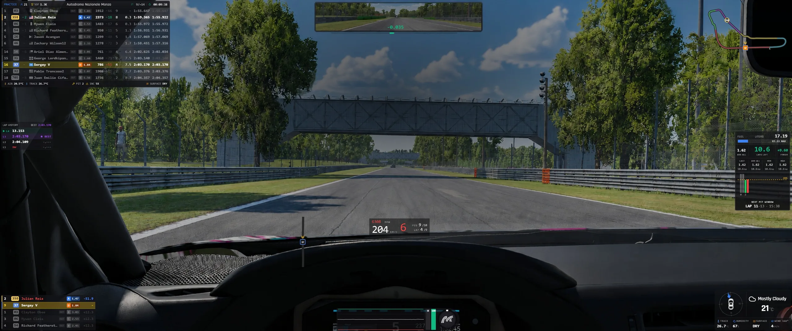
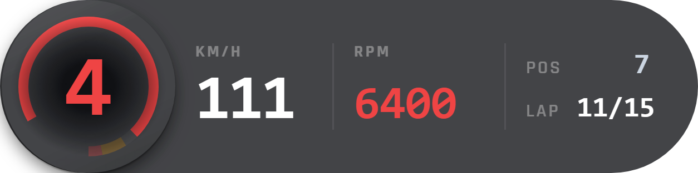
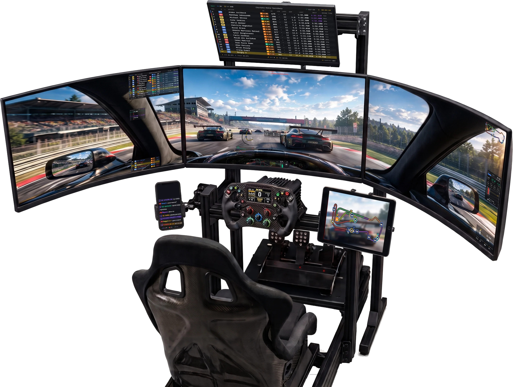
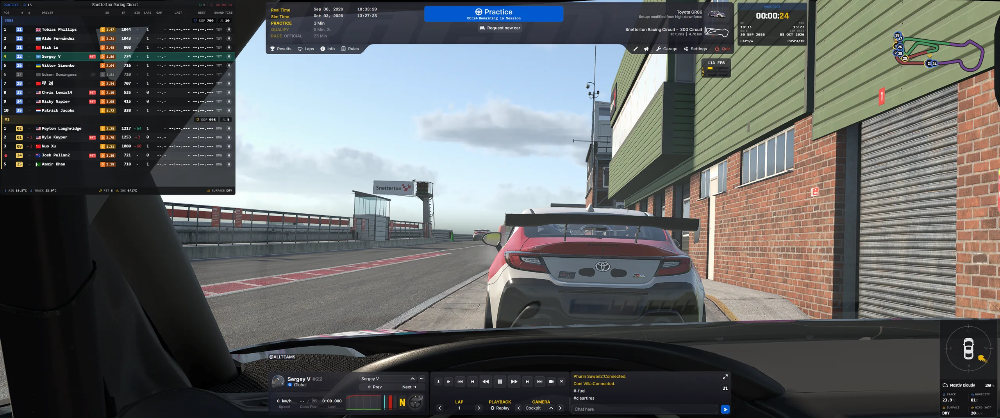
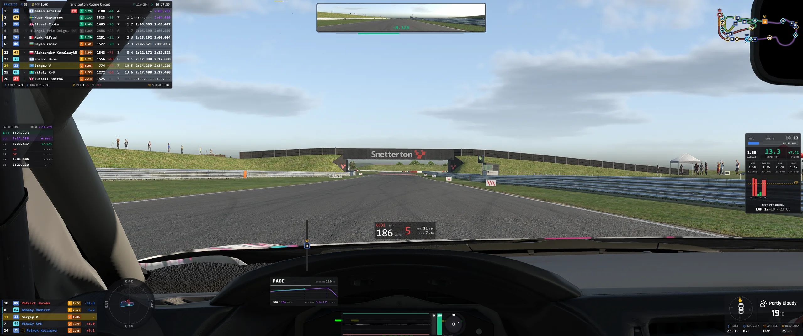
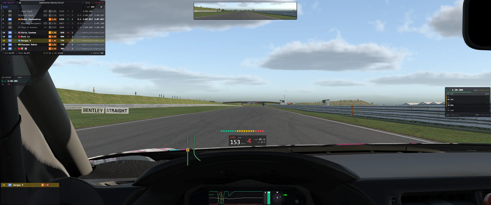
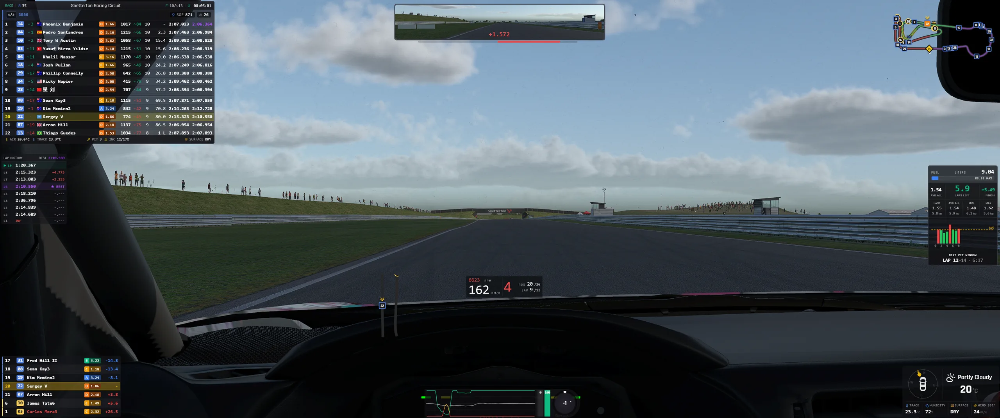
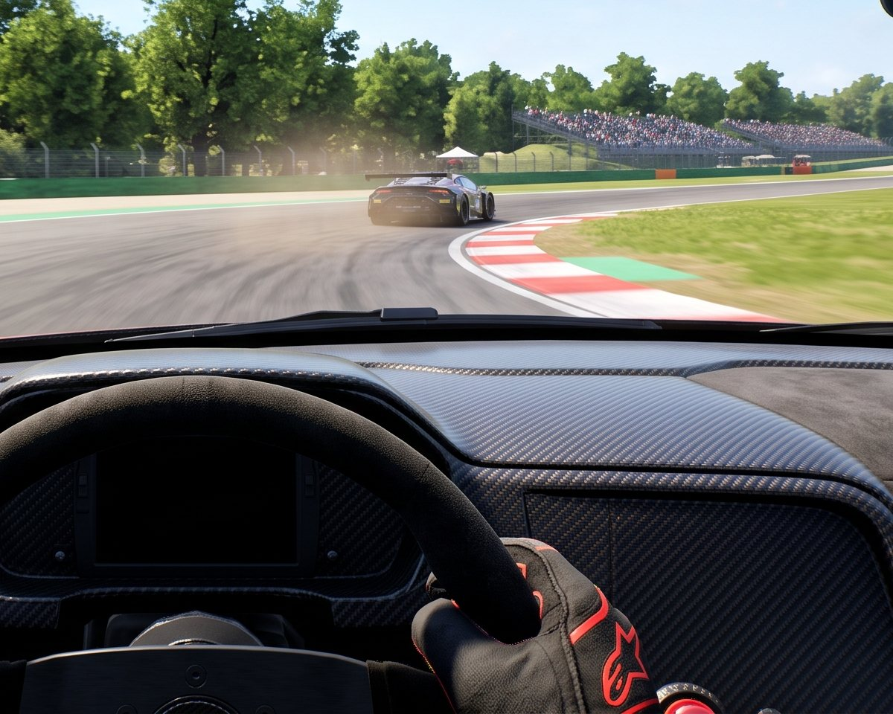

YOUR RACE.
YOUR DATA.
A free, transparent overlay for iRacing that never blocks your view. A tiny Rust core reads telemetry straight from the sim.
-
Rust core
A small Rust backend reads telemetry straight from the sim's shared memory.
-
Fully modular
Widgets can be independently positioned, resized and styled.
-
Layouts for every session
Visual editor and session-based layout switching for practice, qualifying and races.
-
Any screen
Use it on your main screen, a phone, a tablet or a second PC over your local network. Nothing installed on the device.
Every widget is designed to be read at racing speed: one glance, and your eyes are back on the road.
Race & Performance
Race Dash

Speed, gear, RPM, position and lap in one strip — the one widget that never leaves the screen.
All 28 widgets, one line each
Race & Performance
- Race Dash
- Speed, gear, RPM, position and lap in one strip — the one widget that never leaves the screen.
- Pit Line
- Pit limiter, pit-lane speed and the metres left to your box, sized to be read while you watch the mirrors.
- RPM Lights
- A shift light bar you read at the edge of vision, with your own colours and shift point.
- Engine Panel
- Water, oil, fuel pressure and voltage under one glance, so a failing engine is not a surprise.
- Battery
- Hybrid charge, what the MGU-K is doing with it, and the energy spent on the lap.
- DRS
- Armed past the detection point, ready inside the zone, open — the drag reduction system at a glance.
- Input Trace
- Throttle, brake and steering as a rolling trace — see your own hands and feet on the lap.
- G-Meter
- Lateral and longitudinal load live, with the peaks of the lap held beside them.
- Coach
- Brake and traction guidance against your reference lap, while you are still in the corner.
- Invisible Dash
- The numbers with no panel under them at all — speed, gear and position straight on the track.
Timing & Standings
- Standings
- The multi-class order with gaps, class badges, pit state, licence and tyre stint age.
- Relative
- Who is actually near you on track, ahead and behind, whatever lap they are on.
- Relative Map
- The same field laid out along the track, so you read the gaps as distance.
- Delta HUD
- Live delta to your best lap or to the session best, with the trace of how you got there.
- Sector Matrix
- Every sector of every lap side by side — where the lap was won and where it leaked.
- Lap Log
- Your stint lap by lap, the best one marked, invalid laps called out.
- Timer
- Session clock, stint countdown and the time left before you have to box.
Awareness
- Track Map
- Live track position and layout, every car on it, your own class picked out.
- Proximity Radar
- 360° cover for the blind spots, with the real distance to the car beside you.
- Radar Bar
- The same warning as two flat bars down the edges of the screen, out of the driving view.
- Close Battle
- The cars actually fighting you, on a vertical distance axis: ahead goes up, behind goes down.
- Wheel to Wheel
- You and your nearest rival side by side: number, position, speed and the gap between you.
- Flat Flags
- Every flag state as a plain panel — unmistakable at a glance, in any light.
- LED Flags
- Flags as light panels either side of the screen, seen without looking at them.
Car & Session
- Pit Service
- Fuel, tyre sets, pressures and repairs — the whole stop laid out before you commit to it.
- Fuel
- Per-lap burn, laps left in the tank, and exactly what to add to reach the flag.
- Weather
- Air and track temperature, humidity, wind, and how the session is turning.
Streaming
- Stream Chat
- Your chat on the overlay instead of on a second screen — never on the wheel.
Multi-screen layouts
One layout.
Every screen.
Open a layout on any screen on your network — a phone, a tablet, a laptop, a second PC. A browser is all the device needs; nothing is installed on it.
Pick a screen on the rig to look closer

Triple monitors
The overlay you race with, laid over the game on the three screens in front of you.
Top monitor
Standings, weather and the track map moved off the racing view to a screen above it.
Phone on the cockpit
The stream chat on its own screen, read without leaving the car.
Tablet on the wheel deck
The track map across the whole tablet, the field at a glance on a straight.
-
01
Add a screen
In the layout editor, beside your monitors, at any size.
-
02
Open the link
Or scan its QR code on the device. No app, no account.
-
03
Drag widgets on
Each screen keeps its own set, scale and columns.
Layouts
A layout for
every session.
Which widgets, where, on which monitor. Give each session its own layout and the overlay switches as the session changes.




- Every monitor on one canvas
- Remote screens too
- Live data while you place
- Snap grid
- Undo and redo
- Duplicate a layout
Widget settings
Every widget,
your way.
Each widget opens with a live preview beside its settings. Switch a column off and it is gone from the picture before you are back in the car.
- Columns
- Rows
- View modes
- Scale
- Opacity
- Background
- Colours
- A copy for your stream
Controls
Bound to
a button.
Hide everything, cycle a view, send the pit order. Every action goes on a key or a wheel button, in every layout, and stays bound after a replug.
- Keyboard
- Wheels
- Button boxes
- Joysticks
- Pedals
Two keys
F8 to click.
F9 to move.
- F8 Interact
- Scroll the standings, switch classes, click the pit order. The mouse goes back to the game after 15 seconds.
- F9 Edit
- Drag and resize widgets right over the game. Press it again to lock them in place.
Both are defaults — any key or wheel button works.
Performance
Lightweight.
Fast.
A Rust core built on kerb, our own telemetry crate. Each window gets only what its widgets draw.
kerb on GitHub- iRacing Shared memory
- kerb Our Rust crate
- Rust core 60 · 10 · 4 · 1 Hz
- Marble Trace Only what is drawn
- Overlay And remote screens
- 60 Hz On the sim's own signal
- On demand Unused data is never sent
- Open source GPL-3.0 app, MIT kerb

Real racing.
FAQ
Before you
install.
The questions that come up in Discord most. Anything else — ask there.
Is it really free?
Yes. Marble Trace is open source under GPL-3.0: no account, no ads, no subscription, and nothing is locked behind a paid tier.
Which sims does it support?
iRacing, on Windows. That is the one sim it is built and tested against today.
Is it safe to use with iRacing?
It reads the telemetry iRacing publishes for apps through its official SDK — the same data every iRacing overlay reads. The overlay is its own window; nothing is injected into the sim.
Why can't I see the overlay over the game?
Run iRacing in windowed or borderless mode. In exclusive fullscreen the game draws over every other window, the overlay included.
What do I need to install?
Only Marble Trace itself: download the
-setup.exe from the latest release and run it. The
app updates itself when a new release is out.
Can I use it on stream?
Yes. Add a stream screen to a layout and open its link as a browser source in OBS — the whole screen, or one widget per source so you can place each in your scene.
Can a phone or tablet show widgets?
Yes. Any device on your local network opens a screen in its browser, from a QR code in the settings. Nothing is installed on the device, and it can only watch — it cannot change your settings.
Where are my settings kept?
In %APPDATA%\com.voof.marble-trace, not in the
install folder, so layouts and bindings survive updates and
reinstalls.
Does it collect any data?
One anonymous event on launch through Aptabase, an open-source analytics service: app version, OS, screen resolution and locale. No account, no user id, no telemetry from your sessions.
I found a bug or have an idea — where do I go?
Ask on Discord or open an issue on GitHub.
Download
Your next race
starts here.
One installer, nothing else to set up — and it updates itself from then on.